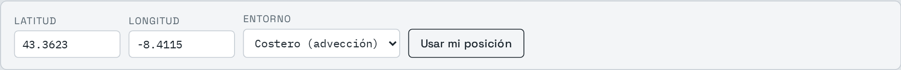
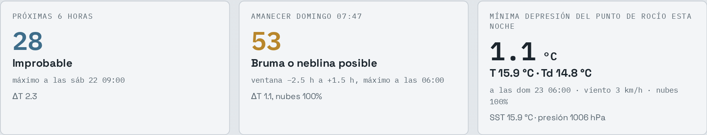
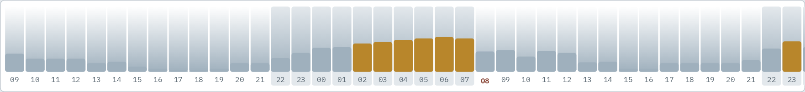
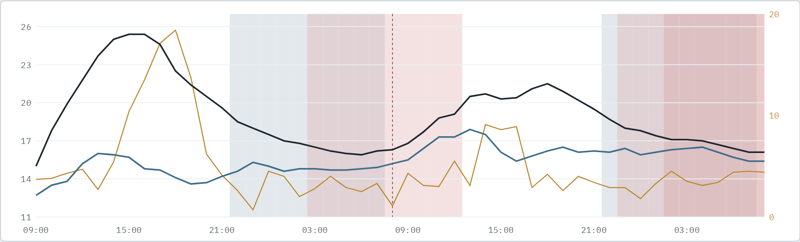
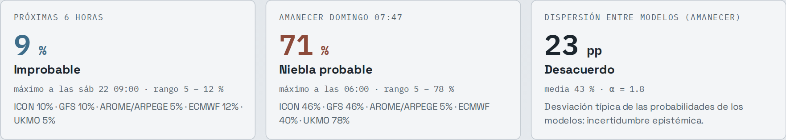
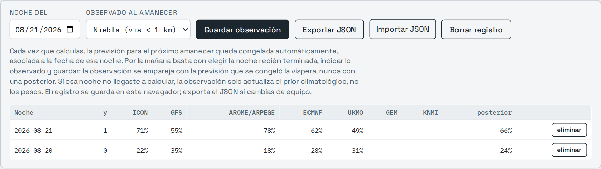

Cómo usar la página de niebla sin saber nada de meteorología. Cinco minutos.
1. Qué hace esta página
Te dice si es probable que haya niebla o bruma en tu zona durante las próximas horas y, sobre todo, en el próximo amanecer, que es el momento con mejor luz para fotografiarla. Los datos vienen de las mismas previsiones meteorológicas que usan las agencias oficiales; la página solo los interpreta por ti.
2. Dile dónde estás

El panel de arriba: sitio, entorno y los dos botones.The top panel: place, setting and the two buttons.
Arriba del todo hay dos casillas con la latitud y la longitud. Lo más fácil: pulsa Usar mi posición y deja que el navegador la rellene (te pedirá permiso una vez). En "Entorno" elige Costero si estás cerca del mar y Interior si no; la niebla de costa funciona distinto y la página lo tiene en cuenta.
Después pulsa Calcular. En unos segundos aparece todo lo demás.
3. Lee el resultado en diez segundos

Las tres tarjetas con datos reales de un día cualquiera.The three cards with real data from an ordinary day.
Las tarjetas grandes son la respuesta. El número va de 0 a 100 y el texto de debajo lo traduce:
0 – 39Improbable. Duerme.
40 – 64Bruma posible. Puede merecer la pena.
65 – 100Niebla probable. Prepara el equipo.
La primera tarjeta habla de las próximas horas; la segunda, del próximo amanecer, con la hora exacta a la que se espera el máximo. En el ejemplo de la captura: madrugar tiene sentido, hacia las 06:00 puede haber bruma. La tercera tarjeta es un detalle técnico; si no te interesa, ignórala.
4. La barra de horas: cuándo salir

48 horas de un vistazo. Aquí el interés se concentra al final de la noche.48 hours at a glance. Here the interest concentrates at the end of the night.
Cada columna es una hora de las próximas 48. Cuanto más alta la barra, más probable la niebla. El fondo gris marca la noche y la hora en rojo es el amanecer. De un vistazo ves si el buen momento es esta noche, mañana, o ninguno.
5. La gráfica de las dos líneas

Negra: temperatura. Azul: punto de rocío. Cuando casi se tocan de noche (franjas rosadas), atento.Black: temperature. Blue: dew point. When they nearly touch at night (pink bands), pay attention.
No hace falta entenderla entera. La regla práctica: la niebla aparece cuando la línea negra y la azul casi se tocan durante la noche. Las franjas rosadas te lo señalan; cuanto más intensas, mejor. Si además la línea dorada (el viento) va baja, todo apunta bien.
6. La segunda pestaña: varias previsiones a la vez
La previsión del tiempo no es única: hay varios organismos (alemán, americano, francés, europeo, británico...) y cada uno calcula la suya. A veces coinciden y a veces no. La pestaña Fusión bayesiana las consulta todas y las resume en un único porcentaje.

El porcentaje combinado, lo que dice cada organismo y si están de acuerdo.The combined percentage, what each agency says, and whether they agree.
Se lee igual de rápido: el porcentaje grande es la probabilidad combinada de niebla, y debajo aparece lo que dice cada organismo por separado. La tarjeta de "Dispersión" te dice si están de acuerdo entre ellos:
Acuerdo alto: todos dicen lo mismo. Fíate del porcentaje.
Desacuerdo: unos dicen sí y otros no. La atmósfera está dudosa; vuelve a mirar por la tarde.
Si algún modelo aparece como "timeout" es que su servidor tardó demasiado ese día. No pasa nada: la cuenta se hace con los que respondieron. Si uno falla siempre, desmarca su casilla.
7. Enséñale a acertar en tu zona (sin entender la estadística)
Esta es la parte especial. Las previsiones son generales; tu valle, tu ría o tu playa tienen sus manías. La página puede aprenderlas, y tu único trabajo son dos gestos al día:
Por la tarde o por la noche: abre la página, entra en la pestaña Fusión bayesiana y pulsa Calcular. Ya está. Con eso la página guarda en secreto lo que cada organismo predijo para mañana (lo llama "previsión congelada", lo verás escrito abajo en letra pequeña).
A la mañana siguiente: mira por la ventana o sal a la calle. Vuelve a la página: la fecha de anoche ya está puesta. Elige en el desplegable lo que viste (Niebla, Bruma, o Nada) y pulsa Guardar observación.

El registro con dos noches de ejemplo: una sin niebla (y = 0) y una con niebla (y = 1).The log with two example nights: one without fog (y = 0) and one with fog (y = 1).
Cada fila de la tabla es una noche: lo que predijo cada organismo y lo que pasó de verdad (la columna "y": 1 niebla, 0.5 bruma, 0 nada). ¿Y para qué sirve? Dos cosas ocurren solas, sin que hagas nada más:
La página aprende cuánta niebla hay realmente en tu sitio, y ajusta sus porcentajes a esa realidad en vez de a una media genérica.
Aprende qué organismo acierta más contigo y le va haciendo más caso. Si el modelo francés clava tus amaneceres y el americano falla, el porcentaje combinado se irá pareciendo más al francés. Eso son los "pesos" que ves en una tabla lateral: el reparto de confianza actual.
¿Cuánto tarda en notarse? Con 10 noches anotadas empieza; con un mes o dos de constancia, el porcentaje ya es "tuyo". Y no hay que ser perfecto: si una tarde se te olvida calcular, anota igualmente lo que viste; esa noche cuenta para la parte 1 aunque no para la 2.
8. No pierdas lo aprendido
Todo lo que la página aprende se guarda dentro del navegador que estés usando, no en Internet. Eso significa que si cambias de ordenador o de móvil, o borras los datos de navegación, el aprendizaje no te sigue. La solución es un botón: de vez en cuando pulsa Exportar JSON y guarda el archivo donde guardes tus cosas. Para recuperarlo en otro aparato, Importar JSON y listo.
9. Preguntas rápidas
¿Tengo que pagar algo o registrarme?
No. Los datos meteorológicos son de una API pública y gratuita (Open‑Meteo) y la página no tiene cuentas ni envía nada tuyo a ningún sitio.
¿Puedo mirar otro sitio distinto de donde estoy?
Sí: escribe sus coordenadas en las casillas. Las sacas de cualquier mapa online (pulsación larga sobre el punto). Eso sí, el aprendizaje de la sección 7 mezcla lo que anotes; conviene entrenar siempre con el mismo sitio.
Marcaba 70 y no hubo niebla. ¿Está rota?
No: 70 significa "probable", no "seguro". De cada diez veces que diga 70, lo esperable es que unas siete haya niebla y tres no. Justo para eso sirve anotar lo que ves: con tus datos el porcentaje se va afinando a tu zona.
¿Qué diferencia hay entre niebla y bruma al anotar?
Regla de andar por casa: si no ves algo que está a un kilómetro (un edificio, una farola lejana), es niebla. Si se ve pero borroso y lechoso, es bruma. Y si la mañana está limpia, Nada.
¿Sirve el número de la pestaña 1 o el porcentaje de la 2?
Los dos cuentan lo mismo de dos maneras. Para el día a día, el porcentaje de la pestaña 2 es mejor porque combina varias previsiones y aprende de ti. La pestaña 1 es útil para ver el detalle hora a hora.
Quick guide
How to use the fog page without knowing any meteorology. Five minutes.
1. What this page does
It tells you whether fog or mist is likely in your area over the next hours and, above all, at the next sunrise, which is when the light is best for photographing it. The data comes from the same weather forecasts official agencies use; the page just interprets them for you.
2. Tell it where you are
El panel de arriba: sitio, entorno y los dos botones.The top panel: place, setting and the two buttons.
At the very top there are two boxes with latitude and longitude. Easiest way: press Use my location and let the browser fill them in (it will ask permission once). Under "Setting" choose Coastal if you are near the sea and Inland otherwise; coastal fog works differently and the page accounts for it.
Then press Compute. Everything else appears within seconds.
3. Read the result in ten seconds
Las tres tarjetas con datos reales de un día cualquiera.The three cards with real data from an ordinary day.
The big cards are the answer. The number runs from 0 to 100 and the text below translates it:
0 – 39Unlikely. Sleep in.
40 – 64Mist possible. May be worth it.
65 – 100Fog likely. Pack the gear.
The first card covers the next few hours; the second, the next sunrise, with the exact hour of the expected peak. In the screenshot example: getting up early makes sense, mist may be around at 06:00. The third card is a technical detail; ignore it if you like.
4. The hour bar: when to go out
48 horas de un vistazo. Aquí el interés se concentra al final de la noche.48 hours at a glance. Here the interest concentrates at the end of the night.
Each column is one hour of the next 48. The taller the bar, the more likely the fog. The grey background marks night and the red hour is sunrise. At a glance you see whether the good moment is tonight, tomorrow, or neither.
5. The two-line chart
Negra: temperatura. Azul: punto de rocío. Cuando casi se tocan de noche (franjas rosadas), atento.Black: temperature. Blue: dew point. When they nearly touch at night (pink bands), pay attention.
No need to understand all of it. The practical rule: fog shows up when the black line and the blue line nearly touch during the night. The pinkish bands highlight it; the stronger, the better. If the golden line (wind) stays low too, everything points the right way.
6. The second tab: several forecasts at once
There is no single weather forecast: several agencies (German, American, French, European, British...) each compute their own. Sometimes they agree, sometimes they do not. The Bayesian fusion tab consults them all and summarises them into a single percentage.
El porcentaje combinado, lo que dice cada organismo y si están de acuerdo.The combined percentage, what each agency says, and whether they agree.
It reads just as fast: the big percentage is the combined probability of fog, and below it you see what each agency says separately. The "Spread" card tells you whether they agree:
High agreement: they all say the same. Trust the percentage.
Disagreement: some say yes, some no. The atmosphere is undecided; check again in the evening.
If a model shows "timeout" its server was too slow that day. No problem: the maths runs on those that answered. If one always fails, untick its box.
7. Teach it to be right in your area (no statistics needed)
This is the special part. Forecasts are generic; your valley, your estuary or your beach have their quirks. The page can learn them, and your only job is two gestures a day:
In the evening: open the page, go to the Bayesian fusion tab and press Compute. Done. With that, the page quietly stores what each agency predicted for tomorrow (it calls it a "frozen forecast"; you will see it written below in small print).
The next morning: look out of the window or step outside. Back on the page, last night’s date is already filled in. Pick what you saw in the dropdown (Fog, Mist, or Nothing) and press Save observation.
El registro con dos noches de ejemplo: una sin niebla (y = 0) y una con niebla (y = 1).The log with two example nights: one without fog (y = 0) and one with fog (y = 1).
Each table row is one night: what each agency predicted and what actually happened (the "y" column: 1 fog, 0.5 mist, 0 nothing). What is it for? Two things happen on their own, with no further work:
The page learns how much fog your spot really gets, and adjusts its percentages to that reality instead of a generic average.
It learns which agency is most accurate for you and gradually listens to it more. If the French model nails your sunrises and the American one misses, the combined percentage will drift towards the French one. Those are the "weights" you see in a side table: the current share of trust.
How long until it shows? It starts after about 10 logged nights; with a month or two of habit, the percentage is truly "yours". And you need not be perfect: if you forget to compute one evening, log what you saw anyway; that night counts for part 1 even if not for part 2.
8. Do not lose what it learned
Everything the page learns is stored inside the browser you are using, not on the Internet. That means if you switch computer or phone, or clear browsing data, the learning does not follow you. The fix is one button: every now and then press Export JSON and keep the file wherever you keep your things. To recover it on another device, Import JSON and done.
9. Quick questions
Do I have to pay or sign up?
No. The weather data comes from a free public API (Open‑Meteo) and the page has no accounts and sends nothing of yours anywhere.
Can I check a place other than where I am?
Yes: type its coordinates into the boxes. Get them from any online map (long-press on the spot). Note that the learning in section 7 mixes whatever you log; best to always train with the same place.
It said 70 and there was no fog. Is it broken?
No: 70 means "likely", not "certain". Out of ten times it says 70, expect fog about seven and none about three. That is exactly what logging is for: with your data the percentage keeps tuning itself to your area.
Fog or mist — which do I log?
Rule of thumb: if you cannot see something one kilometre away (a building, a distant streetlight), it is fog. If you can see it but blurred and milky, it is mist. If the morning is clean, Nothing.
Tab 1 number or tab 2 percentage?
Both tell the same story two ways. For day-to-day use, the tab 2 percentage is better because it combines several forecasts and learns from you. Tab 1 is useful for the hour-by-hour detail.